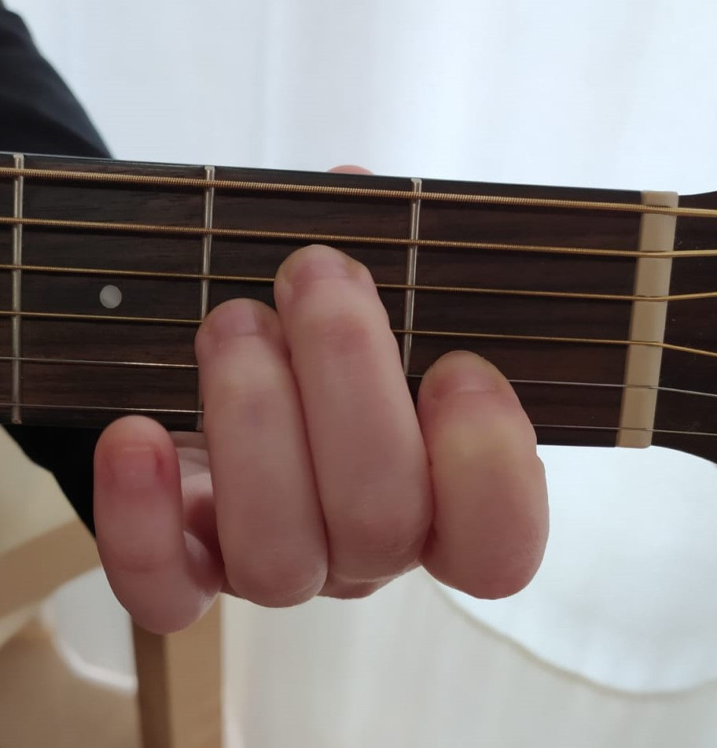
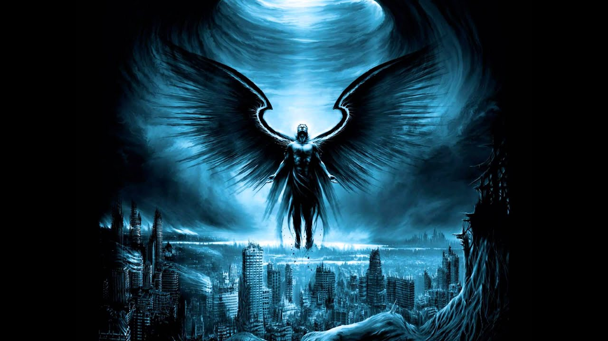

Contenido multimedia
Imágenes

Acorde de la menor - formato PNG
Guitarra - formato JPEG

El Angel Caido - formato jpg
Audio
Tu navegador no soporta el elemento audio.
Tu navegador no soporta el elemento audio.
Lista de reproducción
Audio 1
Audio 2
Vídeo